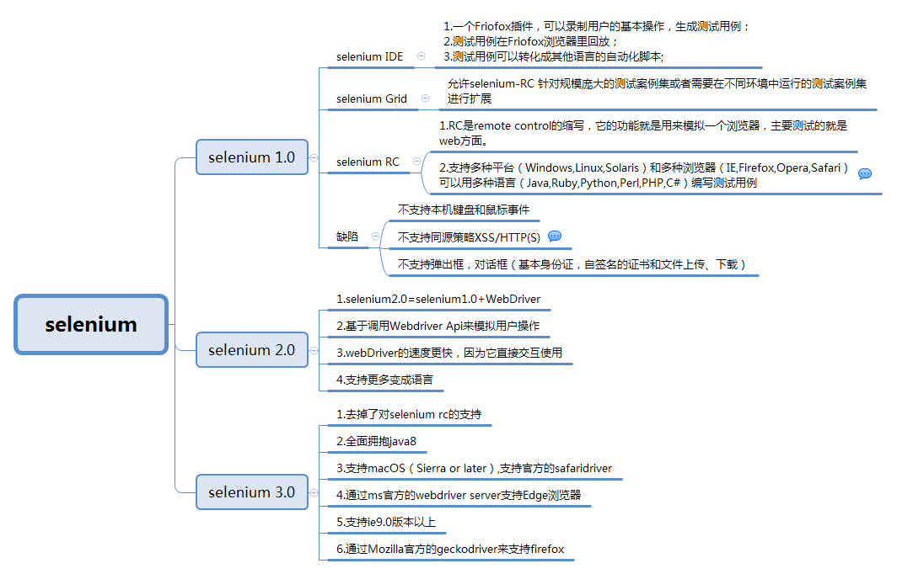

1. 了解Web自动化测试常用工具
2. 熟悉Selenium的特点
1. QTP
QTP是一个商业化的功能测试工具，收费，支持web，桌面自动化测试。
2. Selenium（本阶段学习）
Selenium是一个开源的web自动化测试工具，免费，主要做功能测试。
3. Robot framework
Robot Framework是一个基于Python可扩展地关键字驱动的测试自动化框架。
Selenium是一个用于Web应用程序测试的工具；中文的意思（硒）
1. 开源软件：源代码开放可以根据需要来增加工具的某些功能
2. 跨平台：linux 、windows 、mac
3. 核心功能：可以在多个浏览器上进行自动化测试
4. 支持多种语言：Java、Python、C#、JavaScript、Ruby、PHP等
5. 成熟稳定：目前已经被google, 百度， 腾讯等公司广泛使用
6. 功能强大：能够实现类似商业工具的大部分功能，因为开源性，可实现定制化功能

重点：
1. SeleniumIDE
2. Selenium2.0(WebDriver)